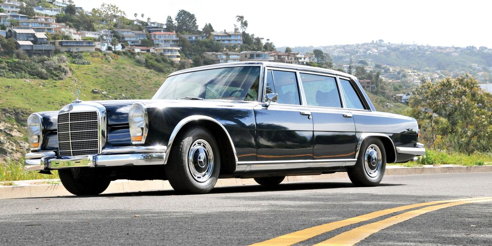
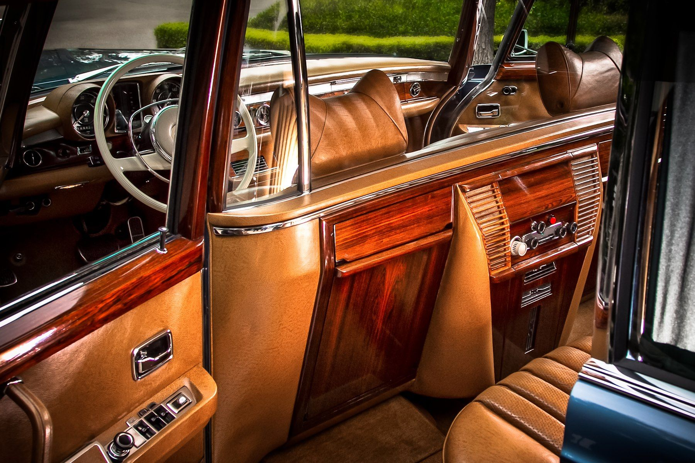
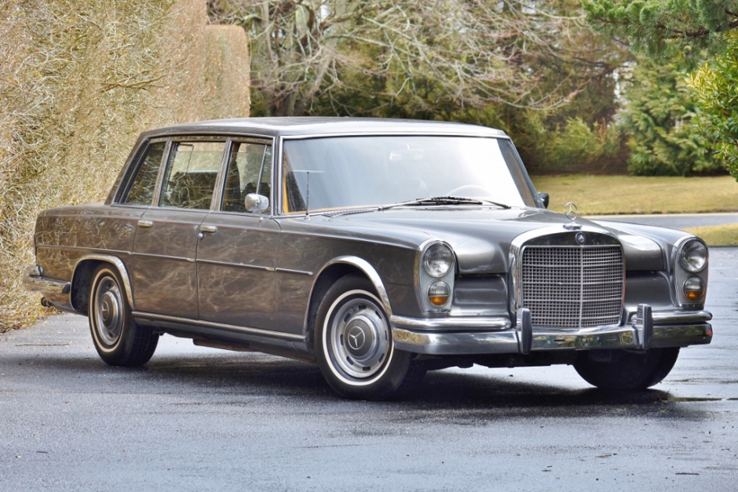

The Mercedes-Benz 600 (W100) is a line of ultra-luxury cars produced by Mercedes-Benz from 1963 to 1981. The forerunner of the modern Maybach marque, the 600 Grosse Mercedes ("Grand Mercedes") succeeded the Type 300d "Adenauer" as the company's flagship model. It was positioned well above the 300-series Mercedes-Benz W112 in price, amenities, and status. Its few competitors included British and American equivalents from Rolls-Royce, Bentley, Lincoln, Cadillac, and Imperial.
Overview



History
The 600 replaced the Mercedes-Benz W189 limousine, which was nicknamed the Adenauer, after Konrad Adenauer, who employed several of these during his term as the first West German chancellor. Production began in 1964 and continued through to 1981. During this time, production totalled 2,677 units, comprising 2,190 Saloons, 304 Pullmans, 124 6-door Pullmans and 59 Landaulets. The 600 succeeded the 1961 Mercedes-Benz W112 in using a pneumatic self-levelling suspension, an enhancement of the Mercedes-Benz 300d Adenauer's dashboard activated mechanical torsion bar based system. A version is incorporated in Mercedes' current Active Body Control. With its demise in 1981, the 600 marked the last ultra-luxury model that the brand produced in an unbroken line since the model 60 hp Simplex from 1903. The company would return to this segment some 20 years later with the Maybach 57/62 (but the Maybach was extremely expensive), but these cars ultimately failed to captivate customers in the same way as their British rivals. As a result, Daimler ended production of the Maybach brand in 2012 and has not returned to this segment. As of 2019, the Mercedes flagship is the Mercedes-Maybach S-Class, which occupies a considerably lower price bracket and is not a true successor to the 600 and earlier models. However, it is seen as a spiritual successor, since it is the first luxury Mercedes since the 600 to feature some bespoke design touches not available on the standard S-Class.
Models
- A short wheelbase 4-door saloon, available with a power divider window separating the front seats
from the rear bench seat, although most were built without this feature. - A long wheelbase 4-door "Pullman" limousine (with two additional rear-facing seats separated
from the driver compartment by a power divider window, of which 304 were built), and a 6-door
limousine (with two forward-facing jump-seats at the middle two doors and a rear bench-seat).
Technical Data:
| Model | Produced | Engine | Length | Width | Height |
|---|---|---|---|---|---|
| 600 | 1963-1981 | 6.3 l V8, front-mounted | 5,450 mm (214.6 in) | 1,950 mm (76.8 in) | 1,500 mm (59.1 in) |
| 600 Pullman | 1963-1981 | 6.3 l V8, front-mounted | 6,240 mm (245.7 in) | 1,950 mm (76.8 in) | 1,510 mm (59.4 in) |
For a better view of the car, check the video below: